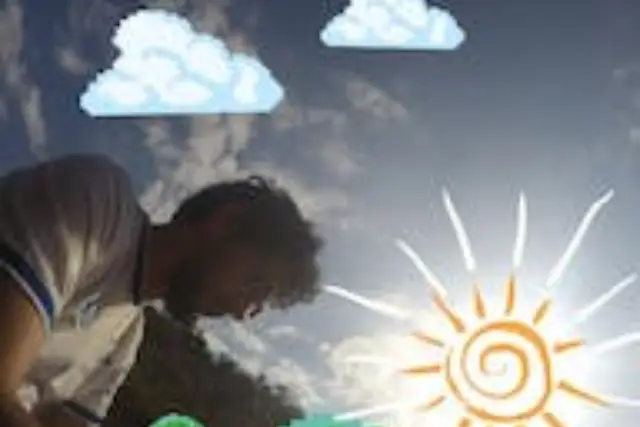

A “Mensagem Improvisada” de Allan Pinheiro e a corrida pela realização dos sonhos

Com sonoridade tranquila e própria para ser escutada na areia, a beira do mar, sentindo o dia acabar. Assim é a canção “Mensagem Improvisada” do cantor e compositor Allan Pinheiro.
Embalado pelo reggae, o músico lançou, recentemente, sua canção, totalmente produzida por conta própria.
De acordo com o artista, ele se surpreendeu com o resultado final, devido ao fato de ter em mãos poucos recursos para dar vida à música. Assim como ele mesmo descreve, a letra da canção é simples porém inspiradora.
Com mensagem motivacional, enquanto a batida clássica do reggae se põe a disposição para conduzir calmamente a canção, Allan aborda a temática sobre buscar, fazer acontecer e ir para além do sonho, sempre se reinventando. O refrão a canção é marcante e sem muito trabalho, fixa na cabeça de modo que logo o ouvinte estará com ela na ponta da língua, cantando.
Com 17 anos de experiência musical, esse foi o primeiro trabalho de Allan Pinheiro, que pode ser conferido no link abaixo.
Não deixe de acompanhar o trabalho do artista, através do perfil oficial no Instagram.